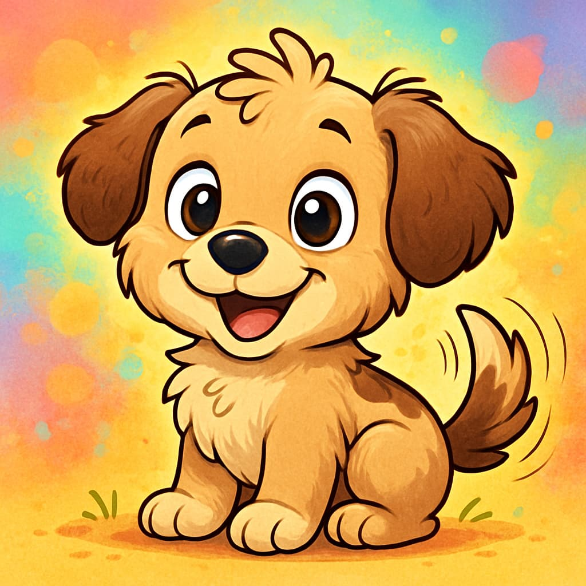

Find Your New Best Friend
Give a loving home to a pet in need.
Luna
Luna is a gentle, affectionate cat 🾠who enjoys cozy naps 💤, playful moments 🎉, and quiet cuddles 🤗. Curious yet calm 😺, she brings warmth and comfort 🡠to any home. Adopt Luna today to welcome a graceful, loving companion 💕.
Adopt Luna

Bruno
Bruno is a playful and loyal dog 🾠who loves outdoor adventures 🌳 and family time 👨‍👩‍👧‍👦. With his cheerful energy ⚡ and affectionate heart ❤️, Bruno is ready to be your lifelong best friend 🥰, bringing joy, love, and protection 🛡ï¸. 🱠Luna (Cat):
Adopt Bruno